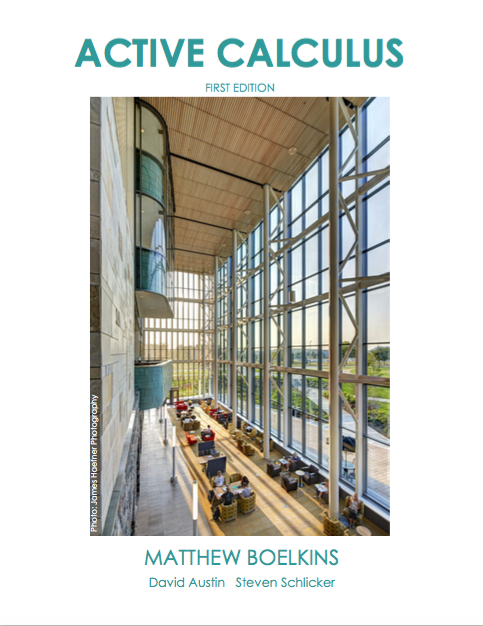
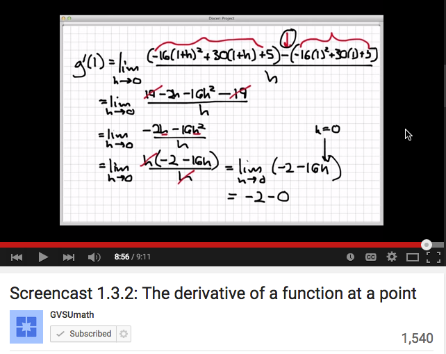
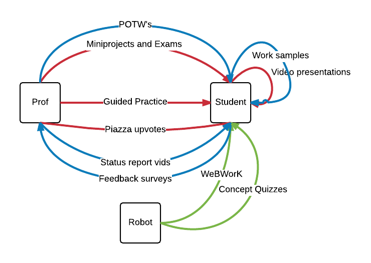
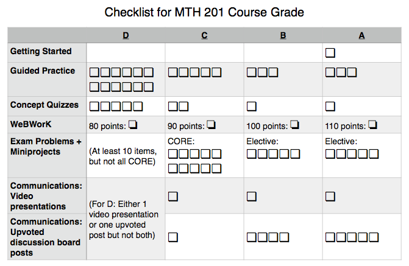

Flipped infrastructures for inquiry-based learning
Legacy of R.L. Moore Conference, Austin, TX, 25 June 2015
Robert Talbert, Grand Valley State University
This talk can be accessed online at:
http://rtalbert.org/rlmoore
Central Question:
What does flipped learning have to offer IBL?
TL;DR
Quite a lot actually
Flipped learning provides at least three structural/design elements that supports IBL: the intellectual ecosystem, structured first engagement with content, and meaningful feedback and assessment.
Flipped learning and IBL are orthogonal and mutually supportive.
What are the ideal outcomes of IBL?
From the definition of IBL at inquirybasedlearning.org
Curiosity
Initiative
Persistence
Collaboration
What are the design needs for these outcomes?
Stimulating course activities
Structure for learning how to learn
Incentives for collaboration and persistence
Failsafes for failure
What is flipped learning?
Flipped learning is a pedagogical approach in which direct instruction moves from the group learning space to the individual learning space, and the resulting group space is transformed into a dynamic, interactive learning environment where the educator guides students as they apply concepts and engage creatively in the subject matter.
Flipped learning design

Class/post-class focus on stimulating activities, done collaboratively with failure tolerance
Pre-class focus on independence, initiative, self-determination
Three flipped learning design elements that support IBL
The intellectual ecosystem

The most effective kind of education is that a child should play amongst lovely things. (attr. Plato)
The ecosystem for flipped learning:
Multiple sources, high quality
Students choose materials from which to learn
Materials focused on modeling processes, not rote mechanics
Multiple channels of communication, accessible 24/7
Examples
Textbooks from the AIBL list
YouTube (filters: ON)
The first contact experience
What makes for an effective preclass/first-engagement assignment?
Clearly stated learning objectives and expectations
Explicit connections to previous content
Links to resources
Exercises to assess learning after first contact
Submission/assessment system to deliver info to prof in timely manner

Assessment and feedback
What makes for effective feedback?
Frequency
Honesty
Positivity (the "PIN" system)
Specificity
Bidirectional-ity
How this looks in MTH 201: Calculus (online) at GVSU
Ecosystem
  Use Piazza for threaded discussion; Blackboard IM for real-timeAssessment
Specifications grading
How does this fit with IBL?
Content and assessment encourage student choice: ✓
Fruitful first engagement with content incentivized: ✓
Student repeatedly trained in self-regulative strategies/behaviors: ✓
Rich ecosystem of materials and feedback for learning: ✓
Assessment strategies incentivize improvement, destigmatize failure: ✓
Flipped learning:IBL :: OS:Apps
Thank you
Robert Talbert, Associate Professor of Mathematics
Grand Valley State University, Allendale, Michigan USA
Blog: rtalbert.org/blog
Presentation: rtalbert.org/rlmoore
Image credits:
- Ecosystem: https://www.flickr.com/photos/pierrepocs/
- Aliens: https://www.flickr.com/photos/interdimensionalguardians/
- Assessment (rocking chairs): https://www.flickr.com/photos/ktylerconk/
- Operating system: https://www.flickr.com/photos/beraldoleal/